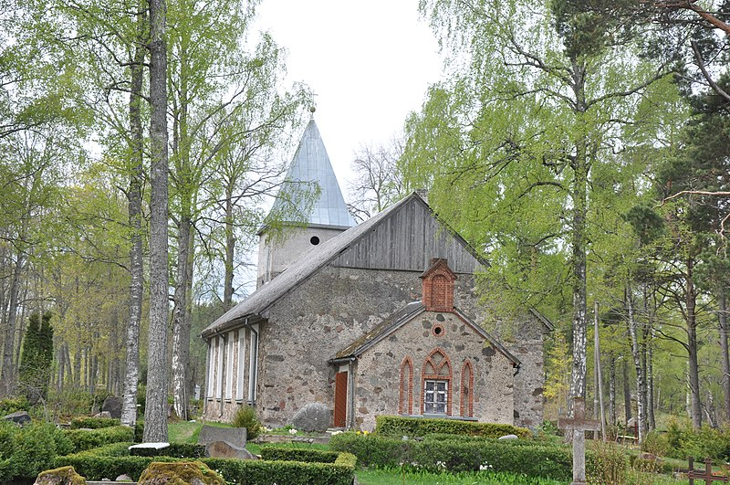
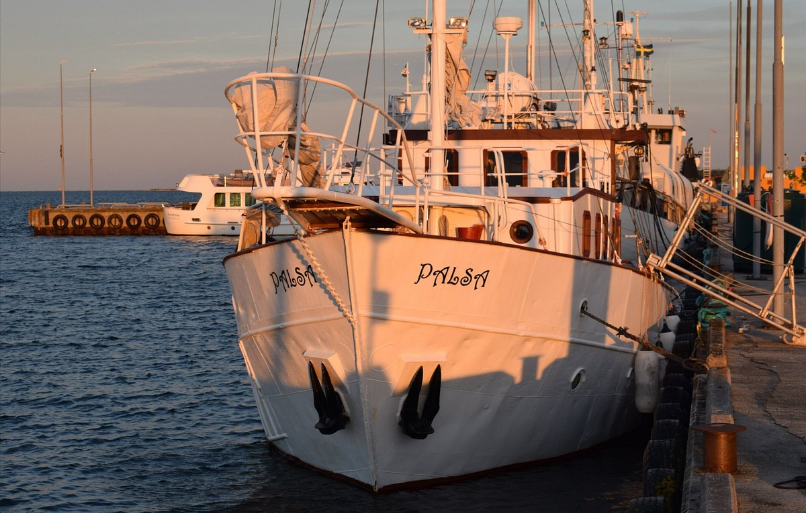
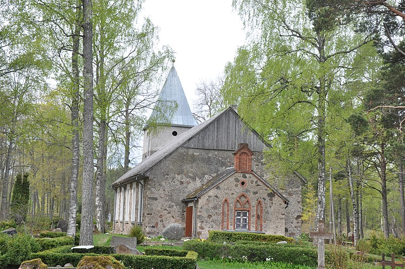
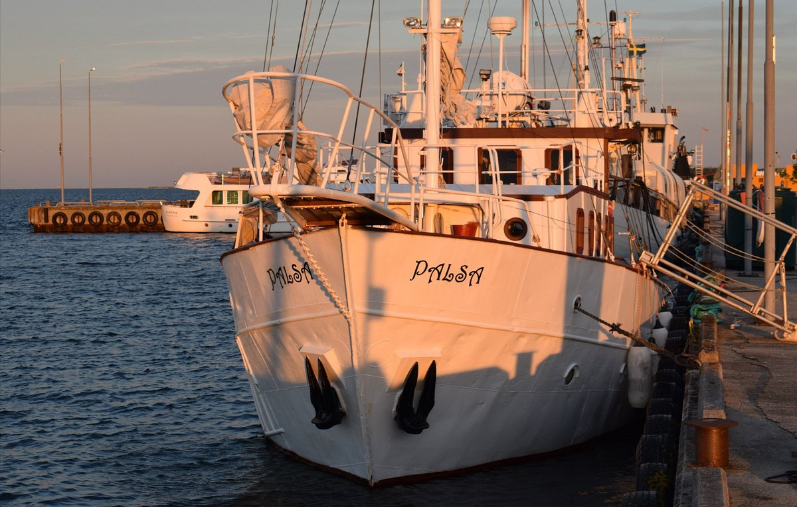

About Roja
Nestled on Latvia's picturesque western coast, Roja is a hidden gem that boasts stunning natural beauty, rich cultural heritage, and a warm community. Whether you're seeking relaxation by the sea, thrilling adventures in the great outdoors, or a glimpse into maritime traditions, Roja offers something for everyone.
 



History of Roja
Roja has long been a hub of maritime activity, with a history dating back to the 13th century. Once a small fishing village, it has grown into a vibrant town that still honors its seafaring roots. The Roja Maritime Museum and various historical landmarks around town serve as reminders of its rich past.
What Makes Roja Special?
From the pristine sands of Roja Beach to the serene trails of Roja Forest, the town is a paradise for nature lovers. Its friendly locals, delicious seafood, and vibrant festivals add to its charm, making it a must-visit destination in Latvia.